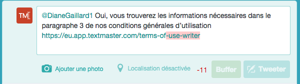

Lesson 5 : International Media Monitoring
“English is one of the most widely spoken languages in the world, so I don’t need to worry about other languages.”
That’s the kind of thinking that has kept a lot of brands, big and small, from successfully establishing themselves in international markets.
56% of Internet users spend more time on websites in their own language or ignore English websites altogether. 75% of online shoppers prefer to shop in their native language. So when a customer makes a comment on social media, in which language do you think they prefer to receive a reply?
International media monitoring may sound complex, but with the right process in place, it can help you create stronger relationships with a larger global audience and even gain insight into new markets.
“International media monitoring can help you gain insight into new markets.”
Handling multiple languages:
Before we go further, we need to address a burning issue: how do you even handle a potentially unlimited number of languages?
In an ideal scenario, you’d have a native speaker for each language in-house to manage communications. But we don’t live in a perfect world, and most companies don’t have those kinds of resources. And while it may be tempting to use Google Translate for everything, you need to tread carefully.
When to use machine translation
Automatic translation tools like Google Translate can be very helpful, but only for internal use. They can help you understand the meaning of a message and give you an idea of what you are dealing with: news coverage, customer feedback or a support question. You can then decide if and how you will respond, using human translation.
When to hire a professional
Your outgoing communications with journalists, customers and partners should always be translated by a human, not a machine.
“All outgoing communication should be translated by a human, not a machine.”
No matter how sophisticated machine translation tools get, they’ll still make mistakes. And in the worst cases, change the entire meaning of your message. If your customer is having problems, they don’t want to be confused further by badly translated troubleshooting emails.
Key takeaway: Automated translation is fine for translating internal communication, but have anything outgoing translated by a professional.
International media monitoring for your brand
You may not have the resources to create localized content and dedicate a community management team for each region, but you can still proactively manage your brand reputation. The online conversations around your brand can be divided into two types: customer support and media relations.
International customer support
As with all customer support, you need to be polite, helpful and timely. Depending on your resources, you can choose to manage all your international social media activity from one account or create a dedicated one per language or region.
“You can handle international support from 1 social account or have 1/language.”
At TextMaster, we have a very multilingual team internally, so we’re able to manage different social network accounts for each language.

Companies that either don’t have the internal resources or don’t have customers across a large range of languages often choose to have an external team of translators.
Our friends at Pecheur.com, a French fishing ecommerce site, use automatic translation to understand their customer’s messages, then write the responses internally and send it to their translators. They then receive the final email and send it to the customer in their native language
“You can automate translations of incoming messages, then get responses translated professionally.”
International media relations
Monitoring global news coverage can allow you to identify bloggers and journalists that are already talking about you. You can reach out to them to create a relationship and potentially earn future coverage.
When your international news coverage reaches a certain level, you can think about translating your blog posts or press releases to ensure that more local press will talk about you.
“Consider translating blog posts & press releases to reach more local markets.”
Key takeaway: What you translate professionally in-house will depend on how you choose to structure your communication channels.
International media monitoring for market research
The first step in monitoring global trends is choosing the relevant keywords, which are usually not a word-for-word translation.
“When monitoring global trends, keywords usually aren't word-for-word translations.”
The most obvious step to international media monitoring is setting an alert for your company’s name, which is simple enough. Company names are often written in Latin letters, even in languages where other alphabets are used.
If you want to make sure you’re covering all your bases, you can ask a native speaker to write your company name in the local alphabet. Be aware that there may be more than one way to spell your company’s name.
If you want to go beyond brand monitoring and keep tabs on local trending topics, you will need to do a lot more than a simple keyword translation. You’ll need to find the relevant phrases in your target region, which may have several synonyms or even use the English words.
In the examples below, “référencement” and “SEO” are used interchangeably for search engine optimization.
Key takeaway: Things like company names and trending topics won’t always have a word-for-word translation.
International media monitoring for competitor analysis
Monitoring your company abroad can also help you to find out who you’re up against. Often, articles mention similar products and services, especially local ones that readers are familiar with.
This kind of information can help you benchmark your services, pricing and policies to match regional competitors in the international markets that are relevant to you.
Key takeaway: Perform a separate competitive analysis of each region to identify similarities and differences in each market.
Avoiding common pitfalls
- Cultural context is important: Many English speakers will start an email with someone’s first name (“Hello Bob”). But this is considered rude in other countries, where people should be addressed by their last name.
- Limited characters and language length: When replying on social networks, you’re often faced with a character limit, which is relatively easy to achieve in English, but can be more challenging in another language. For example, “terms of use” takes up significantly more room: “conditions générales d’utilisation.” This is where working with a native speaker comes in handy again, because they know the common acronyms that can save space, like “CGU” for the term above in French. 
- Localize based on region: This includes replying with information that’s relevant for the user, including local currency, measurements, shipping policies, and opening hours. It’s also important to keep in mind your customer’s hours; waking up a customer at 4am because you forgot about the 11 hour time difference won’t win you any friends.
Putting this into action
- Set up alerts for your brand in multiple languages.
- Create a team of translators that are familiar with your terminology and brand voice.
- Working with native speakers in your company or with your translation team, identify the relevant keywords for alerts in your industry for each region.
- Keep track of international news coverage and bloggers/journalists that could be interested in upcoming news.

The author of this lesson
"Elizaveta is the Marketing Manager at TextMaster where she shares advice on international marketing and content creation. You can say hi on Twitter: @ElizavetaNv"